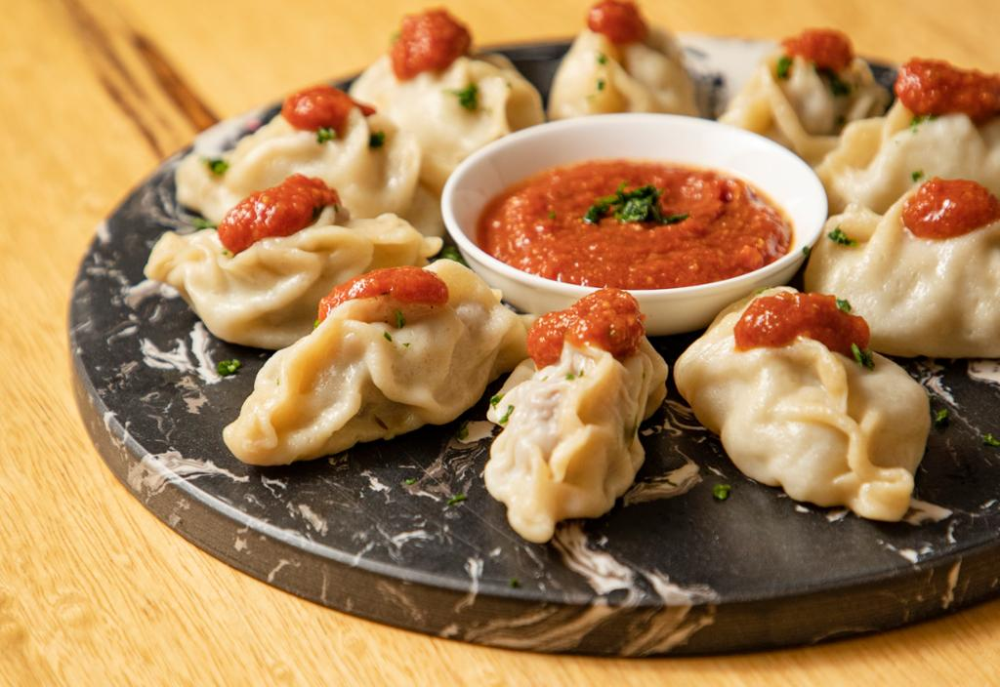

Manto

Manto is an afghani traditional food mostly filled in with meatballs.
ingredients
- meatballs
- flour
- vegetables
Steps
- you need to prepare the flour
- you need to prepare the vegetables
- then you need to prepare the meatballs
- you need to mix the vegetables with meatballs
- make the flour in square shapes
- fill in the squares with the meatballs
- put them in their special dishes on the fire